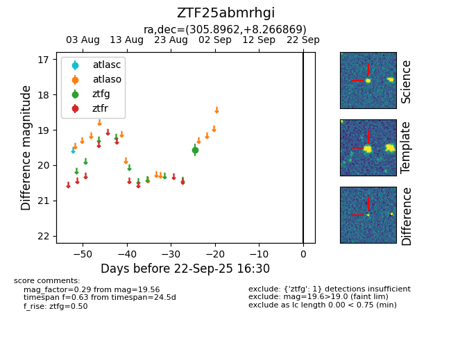

FINK: ZTF25abmrhgi
Lasair: ZTF25abmrhgi
ALeRCE: ZTF25abmrhgi
ZTF25abmrhgi (ztf,fink)
equatorial (ra, dec) = (305.8962,+8.26687)
galactic (l, b) = (51.4226,-16.20586)

last ztfg=19.56
1 ztfg detections